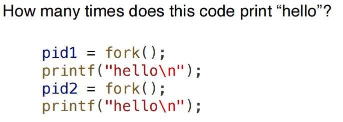

操作系统
第二章 操作系统结构
一、知识点
1.机制决定如何做，策略决定做什么。
第三章 进程
一、进程概念
1.进程概念
（1）资源分配角度：资源分配和保护的单元。
（2）运行角度：一个正在执行的程序称为一个进程。
2.程序与进程的区别
（1）程序：被动实体，即磁盘上存储的可执行文件。
（2）进程：程序被加载到内存后，成为进程。
3.进程的组成部分
（1）代码(code/text)
（2）数据部分(.bss, .data)：存放未初始化、初始化的数据
（3）程序计数器（PC）、CPU上下文
（4）栈（临时数据，如：函数参数、返回地址、局部变量等）
（5）堆：用于动态分配内存。
二、进程控制块(Process Control Block, PCB)
1.进程控制块的作用
（1）创建新进程时，分配一个进程控制块。
（2）进程终止时，其进程控制块被释放。
2.进程控制块的组成部分
（1）进程状态
（2）程序计数器
（3）CPU寄存器：存储上下文。
（4）CPU调度信息：优先级、调度队列指针等。
（5）内存管理信息：基地址寄存器、界限寄存器、页表、段表。
（6）I/O状态信息：分配给进程的I/O设备信息、进程打开文件列表。
三、进程状态
1.进程状态：创建(New)：进程正在被创建；Running：进程指令正在执行；Waiting：进程正在等待某事件发生；Ready：进程就绪，等待分配CPU资源；Terminated：进程终止执行。
2.进程状态转换图
3.子进程创建
（1）父子进程资源分配关系：子进程继承父进程的一部分资源；子进程获得新分配资源。
（2）父子进程的运行关系：父进程创建完子进程后，直接继续运行；父进程等待子进程完成后，再运行。
（3）父子进程的地址空间关系：fork产生子进程时，子进程复制父进程地址空间（可采用写时复制机制）；子进程执行exec系统调用，将新程序加载到自身地址空间中，覆盖原来拷贝自父进程地址空间的内容。
4.fork系统调用：父进程创建子进程；子进程拷贝父进程地址空间中的内容，但分配到一个新的pid，并且暂未获得资源分配；返回值：给父进程返回子进程的pid，给子进程返回0，两个进程分别通过自己的返回值判断自己的身份。
·两个进程在fork系统调用后，均继续执行。
4.[题型积累]fork产生的子进程个数
[例1]

[解]父进程调用第一个fork，产生子进程；父子进程从第二个fork返回后，分别输出一次，共2次；父进程、子进程各调用第二个fork一次，产生孙进程1, 2；父进程、子进程、孙进程1, 2自第二个fork返回后，各输出1次，共4次；总输出次数：2 + 4 = 6
[例2]求执行完代码时的总进程数量。
[解]父进程调用第一个fork，进程数变为2；2个老进程分别调用第二个fork，产生2个新进程。老进程还要调第三个fork；新进程则不调用；第四个fork执行前，共6个进程；执行后，共12个进程，即最终结果。
5.进程终止：进程调用exit系统调用，终止自己；操作系统收回分配给进程的资源；某进程导致其他进程终止。
6.进程等待：父进程等待子进程结束；进程等待某事件发生/资源就绪
四、进程调度
1.基本模块
（1）进程调度器：选择下一个在CPU上运行的进程，分配运行时间。
（2）调度队列：就绪队列；等待队列（针对每一事件/资源各有一个等待队列，如I/O设备等）
[注]各个进程根据其对资源的需求，在上述调度队列之间移动。
2.调度队列切换图
3.上下文切换
（1）上下文切换：保存旧进程的状态信息，加载新进程的状态信息。
（2）上下文保存在PCB中。
（3）上下文开销：上下文切换时，系统无法执行有效任务，带来开销。
（4）用户、内核模式的切换：用户线程上下文保存地点在线程内核栈（pt_regs部分），保存时间：进行上下文，刚进入内核模式时(kernel entry)。
4.进程调度程序分类：长期调度程序/作业调度程序(long-term scheduler/job scheduler)：调度频率低，调度时间间隔长，控制多道程序程度；中期调度程序(medium-term scheduler)：可将进程从内存/CPU竞争中移出，降低多道程序程度；进程可在换出后重新换入。
5.进程分类：I/O密集型进程、CPU密集型进程。
五、进程间通信(Inter-Process Communication, IPC)
1.定义
·协作进程使用进程间通信机制，以相互交换数据和信息。
2.作用：信息共享-允许多用户并发访问共享信息；计算加速-多核系统中将特定任务分为子任务，与其余任务并行执行，提高计算速度；系统功能模块化：不同系统功能分为独立的进程或线程；方便：单用户同时执行多任务。
3.IPC基本模型一——共享内存模型：建立一块供协作进程共享的内存区域：进程通过向共享区域读出/写入数据，实现信息交换：额外开销较低，只需在共享区域建立时调用一些相关系统调用，后续无需再调用；更方便，直接从RAM进行读写；实现更困难。
4.IPC基本模型二——消息传递模型：通过在协作继承之间交换消息，实现通信；用于交换少量信息，易于实现；额外开销较大，每个系统调用只能完成一个信息传递操作；基本系统调用：send, recv；进程消息传递过程：建立连接->调用send, recv系统调用->关闭连接。
5.通信链接实现
（1）物理实现：共享内存、硬件总线、网络。
（2）逻辑实现
①直接通信/间接通信
②同步通信（阻塞通信）/异步通信（非阻塞通信）
·阻塞发送：信息发送者一直阻塞，直到消息被成功接收。
·阻塞接收：信息接收者一直阻塞，直到收到一条消息。
③自动/显式缓冲(explicit buffering)：缓冲(buffering)：消息队列；zero capacity：发送者必须等待接收者；bounded capacity：消息队列已满，则发送者需等待接收者；unbounded capacity：消息队列无限长，发送者无需等待接收者。
6.信号机制：告知目的进程某个事件的发生。
7.管道机制
（1）分类：单向/双向、全双工/半双工、进程是否存在父子关系等。
（2）普通管道：无法从创建管道进程以外的地方访问管道（例：父进程使用普通管道与子进程通信）；生产者-消费者模型，读端、写端；单向通信。
（3）命名管道：访问时，父子进程关系不是必须的；双向通信。
8.客户-服务器通信：套接字(socket)通信-主机间/主机内部通信均可，使用ip + port；远程过程调用(Remote Procedure Call)-提供跨越主机的过程调用抽象(a procedure invocation abstraction accross hosts)；管道通信。
第四章 线程
一、线程基本概念
1.线程基本特点
（1）定义：进程内部的基本执行单元。
（2）线程独有内容：线程ID、程序计数器、寄存器上下文、栈。
（3）线程共享内容：代码段、数据区域、堆（动态分配内存）、进程打开文件、信号。
2.并行类型
（1）数据并行：数据分布于多个计算核，每个计算核执行相同操作。
（2）任务并行：任务分配于多个计算核，每个计算核执行一个独特操作。
3.多线程编程的意义
（1）并发性：一个多线程进程可以一次性完成多个任务。
（2）响应性：拥有并发活动的程序响应性更强。
（3）资源共享：线程共享内存，无需IPC；在同一地址空间进行并发活动是有利的。
（4）经济性：创建线程、线程上下文切换代价小。
（5）可伸缩性：在多核系统上，一个进程可以一次性执行多个任务；与进程相比，共享程度、经济性均有改善。
4.线程的缺点
（1）一个线程的failure可能导致整个进程的failure。
（2）消耗内存；不利于内存保护。
5.多线程编程的挑战：数据依赖和一致性问题；线程间的任务分配；线程负载均衡问题；在线程间分割数据；测试与调试。
6.用户线程与内核线程
（1）用户线程运行于user space，内核线程运行于kernel space。
（2）多对一模型：多线程效率更高，额外开销更低；无法利用多处理器架构；若某一用户线程执行阻塞系统调用，则其余线程均会阻塞。
（3）一对一模型：创建一个新的用户线程，则需同时创建一个内核线程；解决了多对一模型的问题，但速度有所下降。
（4）多对多模型：某一线程阻塞，可以创建一个新的内核线程，以防阻塞其余用户线程；可以实现多核处理器上的真正并发运行；新建用户线程不必新建内核线程。
（5）二级模型：同时支持一对一模型、多对多模型。
（6）用户线程特点：位于内核之上，管理无需内核支持；由用户空间线程库完成线程管理。
7.Pthreads：POSIX标准定义的线程规范。
二、线程研究
1.系统调用fork, exec的语义
（1）线程调用fork的两种可能语义：新进程被创建，且只有一个线程，拷贝自调用fork的线程；新进程被创建，并拷贝调用fork的线程所属的整个进程。
（2）若fork后，新进程立即执行exec，则所有复制内容都被“擦除”，因此fork只复制一个线程较为合适；若新进程不立即执行exec，则可复制整个进程。
2.信号处理的多种选择：将信号传递给信号实际作用的线程；将信号传递给进程中的每个线程；将信号传递给进程中的特定线程；为进程分配一个特定线程，以接收所有信号。
3.安全的线程撤销
（1）异步撤销与延迟撤销：异步撤销(asynchronous calcellation)-线程一收到撤销信号，就立即撤销；延迟撤销(deferred cancellation)-线程不断检查自己是否应该终止，到达撤销点再撤销。
（2）异步撤销与延迟撤销的问题：异步撤销-可能导致状态不一致或同步问题；延迟撤销：多个撤销点不容易实现。
第五章 进程调度
一、进程调度基本概念
1.policy和mechanism
·policy：所选的调度策略。
·mechanism：操作系统的调度器(dispatcher)组件，使用上下文交换机制，用于进程之间的交换。
2.进程分类：I/O密集型进程、CPU密集型进程。
3.抢占与非抢占调度：按进程在执行过程中是否会被其余进程抢占进行区分。具体而言，如果进程在RUNNIGN->READY的任何时刻点都可能被抢占，则对应抢占式调度。
4.CPU调度的考虑因素：CPU使用率、吞吐量（一个时间单元内进程完成的数量）、周转时间（turnaround time，从进程提交到进程完成所需的时间）、等待时间、相应时间。
5.分派器(dispatcher)和分派延迟(dispatch latency)
（1）分派器(dispatcher)：切换到内核模式->进行进程上下文交换->切换回用户模式->使得用户程序从正确位置开始执行。
（2）分派延迟(dispatch latency)：分派程序中止一个进程，并启动另一个进程所需的时间。
6.进程调度队列：就绪队列、设备队列。
二、进程调度算法
[注]注意区别waiting time和turnaround time两个概念。
1.先到先服务(FCFS, First Come Fitst Served)调度：进程平均等待时间较长；护航效应（所有进程可能都需要等待一个大进程释放CPU）；非抢占式调度算法。
2.最短作业优先(SJF, Shortest Job First)调度：实质-根据最短的下次CPU执行时间进行调度；最优算法，给定进程的平均等待时间最小；难以知道下次CPU执行的长度，可通过以前CPU执行测量长度的指数平均进行预测(\(\tau_{n + 1} = \alpha t_n + (1 - \alpha) \tau_n\))；可以是非抢占式调度，也可以是抢占式调度（此时，实质为最短剩余时间优先调度）。
3.优先级调度：可以是抢占式，也可以是非抢占式；问题-无穷阻塞、饥饿，低优先级进程可能产生无穷等待；解决方法-(priority) aging，即逐渐增加在系统中等待时间很久的进程的优先级。
4.轮转(RR, Round-Robin)调度：为分时系统设计；抢占式调度策略；就绪队列为FIFO队列；定义时间片(time quantum)，循环扫描就绪队列，为每个进程分配不超过一个时间片的CPU；平均等待时间一般比SJF调度算法差，但是没有饥饿问题，响应时间有所改善；有界等待。
5.多级队列(Multilevel Queues)调度：各队列优先级不同；队列内部分别采取不同的调度算法；队列间既可以进行抢占式优先级调度，也可以进行时间的划分；应对前台进程（交互进程）、后台进程（批处理进程）对响应时间的不同要求；进程永久分配到一个特定的队列。
6.多级反馈队列(Multilevel Feedback Queues)调度：进程可在不同队列之间移动；若CPU使用时间过多，则优先级下降，将I/O密集型进程、交互进程放到更高优先级队列；使用(priority) aging，防止进程饥饿问题发生。
7.进程调度算法的评估：理论/分析结果-不易获得；仿真-精确度有限；实现-唯一的完全精确方式。
三、线程调度
1.竞争范围(Contention Scope)
·用户级线程-进程竞争范围(PCS, Process Contention Scope)：同一进程的线程之间竞争CPU；一般采用优先级调度。
·内核级线程-系统竞争范围(SCS, System Contention Scope)：内核级线程与系统内所有线程进程CPU。
·采用一对一模型的操作系统，只采用系统竞争范围(SCS)调度。
2.多处理器调度
·多处理器：多核CPU、多线程核（若某线程阻塞，则直接切换到另一线程）
·非对称多处理(Asymmetric Multiprocessing)：一个处理器（主服务器）处理所有调度决定、I/O和其他系统活动，其余处理器只执行用户代码。
·对称多处理(Symmetric Multiprocessing, SMP)：各处理器自我调度。可以所有进程处于共同就绪队列，也可以每个处理器拥有自己的私有就绪队列。
3.多线程多核系统：二级调度-操作系统决定哪一个软件线程应该运行于逻辑CPU->每个内核决定使用哪个硬件线程在物理内核上运行。
4.处理器亲和性(processor affinity)：软亲和性(soft affinity)-操作系统试图保持进程运行在同一处理器上，但不保证；硬亲和性(hard affinity)：保证某进程运行在同一个处理器子集上。
5.负载平衡：设法将负载平均分配到SMP系统的所有处理器；推迁移-特定任务周期性检查每个处理器的负载，若发现不平衡，则将进程推到空闲或不太忙的处理器；拉迁移-空闲处理器从忙处理器上拉一个等待任务时，发生拉迁移。
6.多线程的粒度：粗粒度(coarse-grained)多线程：线程一直在处理器上执行，知道一个长延迟事件发生；细粒度(fine-grained)多线程：在指令周期的边界上切换线程。
7.实时CPU调度
（1）最小化延迟：事件延迟(event latency)-从事件发生到事件得到服务的时间；中断延迟-CPU从收到中断，到中断处理程序开始所需的时间；调度延迟：调度程序从停止一个进程，到启动另一个进程所需的时间。
（2）优先级调度：硬实时系统应保证实时任务在截止期限内得到服务，可利用进程截止期限/速率（周期的倒数）分配优先级；准入控制（admission control），接收进程任务，保证完成，若不能保证在截止期限前完成服务，则拒绝请求。
（3）单调速率调度：抢占式调度、静态（固定）优先级；速率为周期的倒数，周期越短，速率越高；是最优调度，若一组进程不能由该算法调度，则不能由其他分配静态优先级的算法进行调度；调度\(N\)个进程，最坏CPU利用率为\(N(2^{\frac{1}{N}} - 1)\)。
（4）最早截止期限优先调度：截止期限越早，优先级越高；进程向系统公布截止期限要求；截止期限及优先级可以动态调整。
（5）比例分享调度：按比例给程序分配CPU时间；采取准入控制，请求CPU时间股数小于可用股数才允许用户进入。
四、调度算法评估
1.评估准则：最大化CPU利用率；限制最大响应时间；最大化吞吐量。
2.评估方法：确定型模型-采用特定的预先确定的负荷，计算给定负荷下每个算法的性能；排队模型、排队网络分析-根据CPU执行的分布、进程到达系统时间的分布，计算平均吞吐量、CPU利用率、等待时间；Little公式-\(n = \lambda W\)，\(n\)为平均队列长度，\(W\)为队列的平均等待时间，\(\lambda\)为新进程到达队列的平均到达率；仿真；实现。
第六章 同步
一、同步基本概念
1.背景：进程/线程并发执行时，可能在任意时刻被打断，一些操作可能只是部分完成；共享数据的并发访问可能导致数据不一致性。
2.竞争条件(race condition)：多个进程并发访问相同数据，执行结果依赖于访问发生的顺序。
3.临界区问题
（1）组成：进入区、临界区、退出区、剩余区。
（2）临界区问题解决方案的要求：互斥(mutual exclusion，若某进程在临界区内执行，则其余进程均不能在该临界区内执行)、空闲让进(progress，若无进程在临界区执行，且有进程需要进入临界区，则只有不在剩余区的进程可被选择进入临界区，且这种选择不可无限推迟)、有限等待(bounded waiting，进程发出进入临界区到请求被允许位置，其余进程允许进入该临界区的次数具有上限)。
4.处理临界区问题的内核分类：抢占式内核-允许内核模式线程被抢占；非抢占式内核：不允许内核模式线程被抢占。
二、Peterson解决方案
1.目的：解决两个进程/线程之间的同步问题。
2.方法：使用原子的Load/Store操作。
3.变量设置：bool flag[2]，为真表示相应进程准备进入临界区；int turn，表明哪个进程可以进入临界区。
4.理解：互斥-P0进入临界区前，将flag[0]设置为真，且等到turn = 0时才能进入临界区，通过对flag[1], turn取值的讨论可以验证互斥条件；空闲让进-进程退出临界区时，通过flag[i] = FALSE的设置，允许另一进程进入临界区；有限等待：某进程退出临界区时，设置flag[i] = FALSE，如果另一进程作出了进入临界区请求，最多等待进程i进入一次临界区后，另一进程就可以进入临界区了。
5.改进：处理器对不存在数据以来的操作进行重新排序，以提升性能。
6.缺点：只对两个进程的同步问题有效；需保证LOAD, STORE是原子操作；操作的重新排序可能导致运行结果改变。
三、进程同步的硬件支持
1.单一处理器：禁用中断。
2.常见解决方法：内存屏障、硬件指令(test-and-set, compare-and-swap)、原子变量。
3.内存屏障：strongly ordered，表明某处理器所作的内存修改对其余处理器立即可见；weakly ordered，表明某处理器所作的内存修改对其余处理器不是立即可见的；内存屏障：指令如果修改内存，就必须对所有处理器立即可见。
4.硬件指令：test-and-set指令：原子地返回某个变量的原有数值，并将其设置为1；compare-and-swap：比较变量的原有数值跟期望数值是否相同，若相同，则变量被更新为新的数值；使用compare_and_swap实现锁与互斥访问-直到锁的旧值变为0，进程才结束忙等待，进入临界区；退出临界区时，进程释放锁。
（4）使用test_and_set实现有界等待互斥访问：首先，直到lock的旧值为0，即用锁的进程将锁释放，或者waiting[i] = false，当前进程才能结束忙等待，获取锁；然后，进入临界区；最后，进程退出临界区时，按照循环队列的逻辑顺序，向后查找第一个需要进入临界区的进程。如果能找到，则设置waiting[j] = false，令该进程获取锁；否则，令lock = false，之后某个进程再需要锁时，将其置为true即可。
（5）使用compare_and_swap实现原子递增操作
四、互斥锁与信号量
1.互斥锁：保护临界区，使其只能互斥访问；缺点是忙等待，其余进程进入临界区，必须连续不断地调用acquire()系统调用，浪费CPU周期；又称自旋锁(spinlock)，进程不断旋转以等待锁可用。
2.信号量：初始化后只能由wait/P, signal/V操作进行访问；wait与进程阻塞：先让signal的值减一，若减一后，信号量值小于0，表示当前进程无法获得信号量，进入阻塞状态，同时进入信号量等待队列中；signal与进程唤醒：先让signal的值加一。若加一后，信号量值不是整数，则说明信号量等待队列非空，从中移除一个进程，并将之唤醒。
·优点：进程的阻塞与唤醒操作，解决了忙等待问题，节省了CPU时间。
3.对比——互斥锁（自旋锁）与信号量：互斥锁-优点是无需阻塞进程；缺点是忙等待；使用于较短临界区；信号量-好处是无需忙等待；缺点是进程阻塞、上下文切换浪费时间；适用于较长临界区。
4.死锁与饥饿问题：死锁-两个或多个进程同时无限等待只能由它们之中一个进程触发的事件；饥饿-进程可能永远无法从信号量的等待队列中移除，等待时间无限长。
5.优先级逆转问题：高优先级进程被低优先级进程间接抢占。
·举例：低优先级进程持有锁，但是由于优先级低难以获得CPU时间；高优先级进程等待锁的释放。若此时一个中优先级进程无需等待进程，直接就绪、运行，则对高优先级进程进行了间接抢占。
·解决方法：优先级继承，暂时令持有锁的进程具有等待锁的进程的优先级，锁释放后优先级恢复原状。
五、同步经典案例一——有界缓冲问题(bounded-buffer problem)
1.问题描述：生产者进程、消费者进程、n个共享缓冲块；生产者向缓冲块中生产数据，消费者从缓冲块中取出数据并移除。
2.基本目的：若缓冲块满，则生产者不再生产新数据；若缓冲块为空，则消费者不会再尝试从缓冲块中移除数据。
3.信号量设计：互斥锁信号量，初始化为1；满槽数信号量，初始化为0；空槽数信号量，初始化为n。
4.生产者、消费者进程实现：生产者进程-先等待空槽信号量，再等待互斥锁；完成生产后，先释放互斥锁，再释放满槽信号量-消费者进程：先等待满槽信号量，再等待互斥锁；完成消费后，先释放互斥锁，再释放空槽信号量。
二、同步经典案例二——读者-写者问题
1.问题描述：某数据集被多个并发进程共享，读者只能读不能写，写者可读可写；共享访问是指，允许多个读者同时读取数据；互斥访问是指，只允许一个写者访问数据。
2.信号量设计：互斥锁信号量，初始化为1；写信号量，初始化为1；读者数量整形变量，初始化为0。
3.写者进程实现：只需等待写信号，获得写信号后对共享数据进行写入操作即可。
4.读者进程实现：注意到普通整形变量readcount的更新需要互斥锁，否则，readcount可能产生数据不一致问题；若当前进程是唯一一个有读取需求的读者进程，则需等待write写锁，一方面是确保没有写者进程正在写入，另一方面是确保子集开始读取进程后，写入操作暂时被禁止；完成读操作，调用互斥锁更新readcount变量，若无读者则需释放write写锁。
5.问题变形：读者优先（上述案例）、写者优先（再加一个write信号量，写者先请求write再作正常读写锁获取，读者获取读权限、更新readcount时拿write，一获得读权限但还未正式进临界区就释放write）。
三、同步经典案例三——哲学家就餐问题
1.问题描述：哲学家坐在圆桌前，仅有就餐、思考两种状态；每两个哲学家之间有一根筷子；哲学家一次性只能拿一根筷子；哲学家拿起两根筷子开始就餐，就餐结束后放下两根筷子。该问题代表了多种资源分配下的并发控制问题。
2.解决方案：信号量chopsticks[5]，均初始化为1。
3.问题：每个哲学家先等待左侧筷子，再等待右侧筷子，会导致死锁问题；给每个筷子添加一个互斥锁，不会解决死锁问题。
4.非对称解决方案：若奇数序号的哲学家先拿左手边的筷子，偶数序号的哲学家先拿右手边的筷子，则不会导致死锁。
第七章 死锁
一、基本概念
1.死锁：一组阻塞进程，每个进程持有一个资源，并等待获得一个被组中另一进程持有的资源。
2.死锁解决时，可能进行资源抢占和回滚；可能产生饥饿问题。
3.死锁模型：资源\(R_1, \cdots, R_m\)；各资源类型的实例个数\(w_i\)；进程对资源的利用，分为请求、使用、释放三个阶段。
4.死锁产生的四个条件：互斥(mutual exclusion)、占有并等待(hold and wait)、非抢占(no preemption)、循环等待(circular wait)。
5.资源分配图：由进程节点、资源节点、请求边（进程->资源）、分配边（资源->进程）。
6.环形等待与死锁：若无环形等待，则必定无死锁；若有环形等待，如果图中每类资源只有一个实例，则可判断产生死锁，若每类资源的实例多于一个，则死锁有可能会发生。
二、死锁的解决方法
1.四类死锁解决方法：死锁预防、死锁避免、死锁检测、死锁恢复。
2.死锁预防：只需破坏死锁产生的四个条件之一，则死锁解除。
·hold and wait：进程执行前，一次性获得所有资源，中途不能再申请；或进程释放已有资源后，才能获得其他资源。
·no preemption：允许资源抢占，被抢占资源的进程重新进入等待状态，直至所有资源就绪，该进程再重启。
·circular wait：对资源进行一次完全排序(total ordering)，进程只能按照序号递增的顺序获取资源。
3.死锁避免：需要进程按照怎样顺序申请、如何申请资源的额外信息；系统作决策时，综合考虑现有可用资源、现已分配给每个进程的资源和每个进程将来申请和释放的资源；保证死锁永不发生；安全状态-存在进程序列，对每个进程\(P_i\)，它额外请求的资源可被现有可用资源 + 前序进程资源满足，则称现有的资源分配状态是安全的；安全状态保证无死锁发生，不安全状态下可能发生死锁；一般按照额外需求的资源数量由少到多的顺序，判断是否为安全状态。
·单一资源死锁避免：使用资源分配图，边的转化情况为：claim edge->request edge->assignment edge->claim edge->...，图中无环则保证了安全状态。
·多种资源死锁避免：使用银行家算法，每个进程必须提前声明需要使用每类资源的最大数量，进程请求资源时必须等待，若进程获得了所有资源则必须在优先时间内释放这些资源，数据结构有need[i, j], max[i, j], allocation[i, j], available[j]；右上角表示现有剩余资源，按照仍然需求的资源不超过现有可用资源的顺序，不断进行资源分配和释放，每个进程释放资源后，现有可用资源会上升。
4.死锁检测：允许系统进入死锁状态，检测死锁并恢复。
·每类资源只有一个实例的死锁检测：可采用等待图，由进程作为节点，边\(P_i\rarr P_j\)表示进程\(P_i\)等待进程\(P_j\)，周期性检查等待图是否存在环路，存在环路表示存在死锁。
·每类资源有多个实例的死锁检测：类似银行家算法，按照进程请求资源不超过现有可用资源的顺序，检测进程序列，判断是否有死锁。左图无死锁，右图有。
第八章 内存管理策略
一、基本概念
1.进程地址空间保护：使用基地址寄存器（base register，指定最小的合法物理地址）、界限寄存器（limit register，指定进程占有内存范围的大小）。
2.地址绑定：将程序中的符号地址绑定到可重定位的地址；编译时绑定-编译时知道进程在内存中驻留的绝对地址，则可进行编译时绑定，生成绝对代码；若起始地址发生变化，则进程代码需要重新编译；加载时绑定-编译时不知道进程将驻留在何处，则编译器生成可重定位代码，绑定延迟到加载时才执行；起始地址发生变化，只需重新加载用户代码即可；执行时绑定-进程在执行时可从一个内存段移动到另一个内存段，则绑定延迟到执行时才进行；为大多数通用计算机操作系统所采用。
3.逻辑地址与物理地址：逻辑地址-CPU生成的地址；物理地址：内存单元看到的地址（加载到内存地址寄存器的地址）。
3.内存管理单元（MMU, Memory Management Unit）：完成虚拟地址到物理地址的运行时映射；base寄存器又称重定位寄存器，逻辑地址 + 重定位寄存器 = 虚拟地址。
4.动态加载：子程序以可重定位的方式保存在磁盘上，只有被调用时，才被加载到内存中。
5.动态链接：链接延迟到运行时；库程序引用存根(stub)表明如何定位适当的内存驻留库程序，或程序不在内存中时，应如何加载到内存中。
6.交换：进程暂时从内存换出，之后再换入内存。roll out and roll in表示更高优先级进程需要服务时，内存换出低优先级进程，以转载、执行高优先级进程；高优先级进程执行完毕后，再换回低优先级进程。
二、连续内存分配
1.内存分为两个区域：驻留操作系统、驻留用户进程。
2.内存保护：通过重定位寄存器+界限寄存器实现。
3.内存分配：多分区(multiple-partition)方法-内存划分为多个物理连续的分区，每个分区仅包含一个进程：可变分区(variable-partition)方法-操作系统维护表，记录哪些内存可用、哪些内存已用；一段可用内存称为一个hole，经若干次分配和释放后，可用内存集合即不同大小的hole的集合。
·动态分配存储问题的常见方法（选择hole的方法）：First Fit, Best Fit, Worst Fit。一般First Fit, Best Fit执行时间、空间利用率都更好一些，First Fit比Best Fit更快。
4.内存碎片：外部碎片-空闲内存空间被分为小的片段，若总的可用内存之和可以满足请求，但可用内存并不连续，则产生外部碎片问题；内部碎片-进程分配到的内存大于实际所需的内存；外部碎片的解决方法-紧缩(compaction)，即移动内存内容，使得空闲空间合并为一整块。
三、分段与分页
1.分段：段表、段基地址、段界限；逻辑地址由<segmentation number, offset>组成。
2.分页：允许进程内存的不连续分配，避免外部碎片、紧缩，但存在内部碎片；CPU生成的逻辑地址由<page number, offset>组成；页大小为2的幂。
3.TLB(translation look-aside buffer)：若buffer中存在某页的地址转换信息，则无需访问内存中的页表，提高效率；若页码不在TLB中，则需选一个TLB entry进行替换；使用associative memory，支持并行搜索。
4.内存访问时间：内存访问时，若未命中，则需先访问页表对应的内存，再访问目的内存，使得内存访问开销翻倍。
5.页面共享：可用于共享库；一份代码可以同一程序的所有进程共享（如：文本编辑器、编译器、浏览器）；共享内存，用于IPC(Inter-Process Communication)。
6.页表结构：页表需要物理连续；可分为一、二、三级页表。
7.哈希页表：哈希表每一个表项都是链表；查表时，虚拟页号哈希映射到相应表项，与链表节点的虚拟页号进行逐个比较，相等节点对应的物理地址即为所需。
8.反向页表：每个物理帧对应一个表项；页表占据的内存空间是固定的；每个表项存储进程序号、物理页对应的虚拟页号。
第九章 虚拟内存管理
一、知识点
1.虚拟内存允许进程共享内存（如：共享库），提升进程间通信IPC的性能。
2.允许fork系统调用采用写时复制。
3.MMU(Memory Management Unit)产生page fault。
4.page fault交换器：懒交换器(lazy swapper)，直到页面真正需要再换入内存；预调页，利用空间局部性调入访问页面之后的一些相邻页面。
5.内存有效访问时间(effective access time, EAT) = 1 - p×内存访问时间 + p×（page fault处理开销 + 页面换出开销 + 指令重新启动的开销）
6.交换I/O快于文件系统I/O，因此可以在加载进程时，将整个进程从磁盘复制到交换空间，以提升性能。
7.页面置换算法：FIFO有Belady's Anomaly异常；最优算法替换的是最远的未来才被用到，或不再被用到的块，需要未来块的使用信息；LRU的准确实现可以基于栈、计数器，用reference bit周期性逻辑右移、访问时升高最高位近似实现。
8.第二次机会算法：FIFO + reference bit，时钟替换算法。若reference bit = 0，直接替换；若reference bit = 1，将其清零，并找到下一个页进行替换。
9.增强第二次机会算法：使用reference bit + modify bit，优先级从低到高(0, 0)->(0, 1)->(1, 0)->(1, 1)，优先级越低则越可能被替换；时钟替换算法。
10.基于计数的页面替换：LFU(Least Frequently Used)/MFU(Most Frequently Used)。
11.page buffereing算法：保存空闲帧列表、修改页列表；不清除页中的内容，而是记录它们最近包含的是什么内容，如果相应页再次被访问，可以直接使用该页而无需从内存中加载。
12.双缓冲问题：浪费内存空间，操作系统、应用分别保留一份页，分别用于作为I/O缓冲区、用于应用进程自身的任务。I/O密集型应用可能导致双缓冲问题。
13.帧分配：平等分配、比例分配；帧替换：全局替换（更高吞吐量；进程执行时间可能差别较大）、局部替换（更一直的逐进程性能，但是内存可能利用不充分）。
14.页面回收(reclaim page)：空闲页比例低于阈值即开始回收页面，保证有足够的空闲内存，以满足新的页面请求。
15.major page fault：页只能在磁盘中找到；minor page fault，页在内存中，但是映射关系没有建立，可能是共享库，也可能是页被回收但还未清零。
16.Non-Uniform Memory Access, NUMA，分配离CPU更近的内存可以提高性能。
17.颠簸(Thrashing)进程不断换进、换出页面，原因是：进程的总内存大小小于进程局部的大小；解决方法有：使用局部页面替换而非全局页面替换，使用工作集记录最近m次访问的页面，这些页面不会被换出。
18.工作集窗口大小为k表示：最近k次访问的页面（可能重复）在工作集中。
19.部分内核内存有物理连续的需求，如设备I/O等。
20.TLB reach = TLB size * page size；通过增大页面大小可以降低TLB压力。
21.I/O联锁(I/O Interlock)：用于从设备中复制文件的内存页应被加锁，防止被替换。
22.slab分配器：一组对象的缓冲区，一个cache包含一个或多个slab，一个slab有一个或多个页，被分割为等大的对象；好处是没有fragmentation、快速内存分配。
第十章 文件系统接口
一、知识点
1.打开文件：进程打开文件表、全局打开文件表（每个文件只有一个表项，用引用计数表明有多少个进程打开该文件）。
2.锁：强制锁、建议锁。
3.访问：顺序访问、随机访问（直接访问）。
4.磁盘：可以分为分区(partitions/minidisks/slices)。
5.目录：一级、二级(Master File Directory, MFD; User File Directory, UFD)、树结构（文件分组、命名方便、搜索高效）、无环图结构（允许链接到其他的目录、文件，用于起别名；使用向后指针、引用指针）。
6.硬连接：使用引用计数，用户文件目录包含的是索引节点的指针，引用计数为0才真正删文件，用户一般删除的只是自己的目录项。
7.软连接：主文件才有指向文件索引节点的指针，其他用户都只有该文件的路径名，没有指向索引节点的指针。
8.一般图目录：允许任意连接，可能产生环路；解决环路问题，可以通过垃圾回收对磁盘空间进行回收，也可以在新链接创建时，使用环路检测算法判断合法性。
10.文件系统加载：把文件系统链接到操作系统中，形成一个单一命名空间(single name space)；装载点的旧目录之后不可见。
11.文件系统共享：保护模式，如User ID, Group ID；分布式系统，通过NFS, Network File System进行共享，用客户-服务器模式，允许用户从服务器装载文件系统。
12.ACL, Access Control List，细粒度控制。
第十一章 文件系统实现
一、知识点
1.文件系统的层次化：应用程序->逻辑文件系统（保存文件系统元信息，存储目录结构，保存文件控制块FCB，输入读写目录，输出逻辑块）->文件组织模块（将逻辑文件块映射到物理文件块，管理空闲空间）->基本文件系统（分配、维护包含文件系统、目录、数据块的缓冲区，缓冲区作为cache增强性能）->I/O控制（包含：设备驱动器、中断处理器）。
2.层次化文件系统降低了复杂度，但是增加了额外开销，导致性能下降。
3.磁盘文件结构：启动控制块、卷控制块（包含卷中的块数、空闲块指针、空闲FCB数量及指针等）、目录、FCB。
4.内存文件结构：装载表，一个表项对应于一个装载的卷；目录cache，用于快速的路径映射；全局打开文件表、进程打开文件表；各类buffer，包含在传输的磁盘块。
5.装载文件时，只先把FCB加载到内存，并添加到系统级别的打开文件表，真正需要访问文件数据时，再将文件数据块加载到内存中。
6.虚拟文件系统：面向对象；把文件基本操作和实现细节隔离开，使操作系统可以处理不同的文件系统。
7.目录实现：哈希表；线性表，对于每个文件名，包含指向文件元信息的指针，时间开销大。
8.磁盘文件块分配：连续分配（对顺序访问友好，降低seek time，目录只需追踪其头部块地址、在块中的长度即可；难以寻找空闲空间，产生外部碎片，可扩展性差）；链接分配（一个块包含到下一个块的指针，块可离散分布；定位某一个块，需要大量的I/O和disk seek；可通过将块聚合成簇进行改进，但是又会产生内部碎片）、索引分配（无外部碎片，支持顺序访问和直接/随机访问；由索引块产生额外开销；可以使用多级索引块、链式索引块；索引节点称为inode(index node)）。
9.FAT(Fie Allocation Table)。
10.磁盘空闲空间管理：bitmap；空闲块之间形成链接；使用索引对空闲块分组，并计数。
11.提升文件系统性能：异步写（buffered/cached）、延迟释放和提前读取。
12.page cache：可用于内存映射文件；文件系统使用buffer(disk) cache，用于磁盘I/O。
13.文件系统需保证一致性；故障恢复方法包括备份、日志等。
第十二章 大容量存储介质
一、磁盘结构
1.寻址：相当于访问逻辑块构成的一维数组，逻辑块是最小的传输单元。
2.逻辑块被映射到磁盘的扇区(sector)，从最外侧到最内侧磁道(track)，扇区号逐渐增加；首先在当前磁道进行映射，然后映射同轴圆柱体的其他磁道；最后在从外向内映射其余同轴圆柱上的磁道。
3.positioning time(random access time) = seek time + rotational latency，其中seek time移动到指定的圆柱，rotaitional latency移动到目标扇区。
4.性能评价：有效/理论数据传输率、seek time、latency。
5.average I/O time = average access time + (data to transfer / transfer rate) + controller overhead。
二、磁盘调度
1.操作系统进行好的磁盘调度，应尽量优化磁盘的access time(seek time + rotational latency)和disk bandwidth(由数据传输量、从第一个请求发出到最后一个传输完成的时间决定)。
2.磁盘调度：决定哪个等待的磁盘请求先进行服务；尽量最小化seek time，而操作系统一般难以计算rotational latency。
3.FCFS算法：请求获得服务的机会公平，没有无限推迟问题；但是并不尝试优化seek time，从而服务质量也不是最佳。
4.SSTF算法：减少平均等待时间，增大吞吐量；可能不是最优算法；较长seek time的请求可能遭遇饥饿问题；提前计算seek time带来开销；响应时间方差较大，表明SSTF算法只青睐某一部分请求。
5.SCAN算法：高带宽，响应时间方差小；但是刚被磁盘臂访问过的位置若有请求，则请求的等待时间较长。
6.C-SCAN算法：与SCAN算法相比，响应时间更为均匀。
7.LOOK/C-LOOK：防止了必须移动到磁盘某一段而带来的额外延迟。
8.算法选择：SSTF常用，适合作为默认调度算法；LOOK/C-LOOK在I/O负载较重的情况下表现较好。
9.文件分配、元数据的分布，都会影响磁盘的性能，原因是文件系统耗费大量努力，以提升空间局部性。
三、非易失性存储介质
1.SSD、USB drives等，比HDD更可靠，更昂贵，寿命更短；容量更少，但是速度快许多；总线可能速度太慢；没有移动部件，没有seek time, rotational latency，因此FCFS算法是较好的选择。
2.挑战性：必须首先擦除然后重写，以更大的块，而不是页为单位；总擦除次数、每日擦除次数均有上限。
3.NAND Flash控制器算法
4.磁带
四、磁盘管理
1.物理格式化/低级格式化：将磁盘分为扇区，供磁盘控制器读写；扇区可以包含头信息、数据、错误纠正码(error correction code, ECC)。
2.操作系统将自己的数据结构放在磁盘上，将磁盘分为由圆柱面形成的组，每个组视为一个逻辑块。
3.逻辑格式化：操作系统将文件系统的初始数据结构放在磁盘上，数据结构记录了空闲空间、已分配空间，还包含一个初始为空的目录；一些文件系统有空闲块，以处理坏块；不同的块可以组合成一个簇(cluster)，以进一步提升性能。
4.磁盘I/O以块为单位进行操作；文件I/O以簇为单位进行操作。
5.bootstrap程序：位于ROM中，规模较小，作用是从磁盘调入完整的引导程序；完整引导程序存储在磁盘固定位置上的“启动块”，该磁盘称为启动磁盘。
6.坏块处理：扇区备用(sector sparing/sector forwarding)、扇区滑动(sector slipping)。
7.磁盘分区(partition)：根分区包含操作系统，在启动时装载到内存；其余分区可以自动装载、手动装载。
·装载时，检验文件的一致性，分析是否所有元数据都正确，如不正确应尝试修复。
·引导块：指向完整的文件系统引导代码区。
五、交换空间管理
1.作用：用于进程切换、页面切换，当DRAM不足以支撑所有进程运行时，将一部分进程、页面从DRAM移动到辅助存储设备。
2.交换空间管理：多个交换空间，以降低设备的I/O负载；独占设备是较好的选择；可以位于不同的扇区，也可以是文件系统的一个文件。
3.磁盘连接：主机连接的存储（由I/O总线直连）、网络连接的存储（常用协议：NFS, CIFS, iSCSI；通过远程函数调用(Remote Procedure Call)实现）、存储空间网络(Storage Area Network, SAN，连接服务器、存储单元的私有网络，使用告诉连接、高效的协议)。
六、RAID(Redundant Arrays of Independent Disks)
1.磁盘不可靠、速度慢，但是便宜；该方案的作用是提高可靠性和磁盘访问速度（若数据跨磁盘分布，则可以提高数据读写的带宽）。
2.RAID的常用手段：数据镜像(Data Mirroring)，将同样的数据复制到多个磁盘上，每次写数据，每个镜像都要写一遍；数据分条：将数据分割到不同的磁盘上，以允许并行读取；错误纠正码(Error-Code Correcting, ECC)，使用奇偶校验位等措施，以重构损失的位。
3.RAID级别：RAID 0，数据分条存放在不同的磁盘上，一般分条大小固定，可以提高性能，但可靠性未提高，用于高性能场景；RAID 1，一组数据镜像复制到两个磁盘上，每次写数据，两个镜像都要写；RAID 2，比特级别数据分条，使用Hamming Code用于错误纠正(4 bits data + 3 bits parity)；RAID 3，比特级别数据分条(bit-interleaved parity)，一个磁盘专门存放奇偶校验信息；RAID 4，块级数据分条，专用奇偶校验盘，小型读取只涉及一个磁盘；RAID 5，块级数据分条，奇偶校验分布在所有磁盘上；RAID 6，对RAID 5添加了一重额外的校验（双重校验）。
4.RAID与文件系统：只能从磁盘故障中进行错误的检测与恢复，不解决数据损坏(data corruption)等问题。
第十三章 I/O系统
一、基本概念
1.I/O的必要设备：总线、端口、控制器。
2.I/O访问的方式：轮询(polling)、中断。
3.I/O设备的寄存器：设备通常提供寄存器，用于I/O设备的数据传输与控制，包含数据流入/流出、状态、控制/命令寄存器。
4.I/O设备的地址分配：一般给寄存器、设备上的存储分配内存地址。
5.I/O设备的访问方式：直接I/O指令（访问寄存器）、内存映射的I/O指令（数据、控制寄存器映射到处理器的地址空间，一般用于访问设备上的大型存储区域）。
二、轮询与中断
1.轮询：每个I/O操作都是忙等待；指令发送给设备控制器（命令寄存器）；不断读取状态寄存器，直到设备告知指令已经完成。若设备较快，则忙等待较为合理；若设备较慢，则忙等待效率低下。
2.中断：避免忙等待，提高CPU利用率；设备驱动器(OS的一个组件)给设备控制器发送命令后返回，OS调度其余活动；完成指令后，设备中断处理器，OS通过处理中断获得指令结果；需要上下文切换，若中断频率很高，则不如轮询有效。
三、直接内存访问(Direct Memory Access, DMA)
1.直接在I/O设备和内存间进行数据传输，避免程序控制I/O(Programmed I/O)增加CPU负担。
2.数据以大块形式进行传输；需要设备或系统的DMA控制器进行支持。
3.操作系统给DMA控制器发送命令，一般是将指令的指针写入指令寄存器；操作完成后，设备中断CPU进行通知。
四、应用程序I/O接口
1.I/O系统调用封装设备的表现；设备驱动层为内核I/O子系统隐藏设备控制器之间的差异。
2.I/O设备的分类：字符流、块；顺序访问、随机访问；同步、异步或同步兼异步；可共享或独占；操作速度；读写、只读、只写。
3.块设备接口(block-device interface)-基本行为有read, write, seek；raw I/O、直接I/O、文件系统访问；可以进行内存映射的文件访问；可提供直接内存访问(DMA)；字符流接口(character-stream interface)-基本系统调用有get, put；网络套接字接口；内存映射的文件访问；时钟和定时器。
五、同步与异步I/O
1.同步I/O：分为阻塞、非阻塞I/O；阻塞I/O，应用程序挂起，直到I/O操作完成；非阻塞I/O，进程不阻塞，返回已有的数据。
2.异步I/O：在I/O执行的同时，进程也运行；I/O子系统完成操作后发信号告知进程。
六、I/O调度
1.I/O调度基本概念：对各设备的I/O请求，维护请求队列；通过I/O调度，尽量保证公平性和服务质量。
2.缓冲区-保存在两个设备之间，或设备和应用程序之间传输数据的一块内存区域；作用-处理数据流生产者、消费者之间的速度不匹配问题；解决设备传输大小不一的问题，如计算机网络中缓冲区大量用于消息的分段和重组；支持应用程序I/O的“复制语义”，即保证写道磁盘的数据版本是应用程序进行系统调用时的版本，与应用程序缓冲区的任何后续更改无关。
3.缓存：保存数据的备份，以提供高速访问；一些情况下和缓冲(buffering)结合使用。
4.假脱机(spooling)：高速磁盘上的一个缓冲区，若设备一次只能处理一个请求，则暂时保存设备输入（即程序输出）。
5.设备预留：提供设备的额外访问；包含分配、释放的系统调用；检测死锁。
6.错误处理：一些操作系统只返回错误码或I/O请求失败的代码；另一些操作系统则试图从错误中恢复，如读写重试或更高级的错误处理方法。
七、其他问题
1.I/O保护：将所有I/O指令设置为特权指令；保护内存映射I/O及I/O端口。
2.内核I/O数据结构：一些内核保存I/O组件的状态信息，如打开文件表、网络连接、字符设备状态等，并追踪缓冲区、内存分配、脏块等信息；另一些内核使用消息传递实现I/O。
3.给硬件的I/O请求：系统资源访问需要映射到硬件，如文件名需要转换为设备表示。
4.性能：内核I/O代码使用CPU执行设备驱动器；中断与上下文切换；数据的缓冲和复制。
5.网络通信：上下文切换频率较高。
6.在I/O层面改善操作系统性能的方法：减少上下文切换次数；减少数据复制；通过使用大规模传输、更小的控制器、轮询，减少中断数量；使用直接内存访问(DMA)；使用更智能的硬件设备；对CPU, memory, bus, I/O performance，以获得最高的吞吐量；将用户模式进程、守护进程移动到内核线程中。
第十四章 操作系统安全
一、知识点
TCSEC(Trusted Computer System Evaluation Criteria)、ITSEC(Information Technology Evaluation Criteria)、CC(Common Criteria)；可信基（安全保护机制的集合）、攻击面（组件被其他组件攻击方法的集合）、防御纵深（设置多道防线，为防御增加冗余）；访问控制：认证、授权、审计(Auditing)；自主(Discretionary)、强制(Mandatory)访问控制；内核代码注入、内核代码重用、内核数据攻击。
习题总结
I/O
一、文件系统基础
1.I/O子系统合理的层次组织排列顺序：用户级I/O软件、设备无关软件、设备驱动程序、中断处理程序。
2.设置磁盘缓冲区的主要目的：减少磁盘I/O。
3.文件的索引节点号位数，决定了能存储文件数量的上限。
4.“阻塞等待”状态就是“睡眠”状态。
二、目录/文件系统
1.建立软链接（符号链接）时，引用计数直接复制。
2.删除文件时，内核必须释放其磁盘空间，但是快捷方式不一定要处理。
3.注意：盘块和块内字节从0开始编号。
I/O管理
一、I/O设备概述
1.I/O子系统：用户级别I/O软件->设备无关软件->设备驱动程序->中断处理程序。
2.从磁盘读数据的流程：初始化DMA控制器，启动磁盘->磁盘传输数据到内存缓冲区->DMA控制器发出中断请求->执行DMA结束对应的中断服务程序。
二、设备独立性软件
1.系统内存设置磁盘缓冲区，主要目的是：减少磁盘I/O次数。
2.Spooling：低速I/O设备上的数据传送到高速磁盘上，或相反；独占设备改成共享设备；需要多道程序支持；设备与输入井、输出井间的传送由系统实现。
三、磁盘与固态硬盘
磁臂黏着：系统总是访问磁盘的某个磁道而不响应对其他磁道的访问请求。只有FCFS算法不会导致磁臂黏着。
内存管理
1.系统发生抖动时，撤销用户进程是有效措施，增加磁盘交换区容量没有作用。
2.Best Fit若对空闲分区链进行排序，一般是按照从小到大的顺序。
3.链接阶段形成逻辑地址。
死锁
1.各进程恰好持有demand count - 1个同类资源，此时的资源总量即为可能死锁的最大资源总量，总量+ 1即为不发生死锁的最小资源量。
2.死锁预防是四种方法中最为严苛的，破坏了死锁四个条件之一，必定不发生死锁；银行家算法只能避免死锁，不能判断系统是否处于死锁状态。
3.单一资源的安全序列：严格列出现有空闲资源、需求资源，画箭头表示某进程完成任务后空闲资源数量的变化情况。
4.A system is in a deadlock, if its resourceallocation graph contains a cycle and there is just oneinstance of every resource.
信号量设计问题
1.复杂生产者问题（一个盘中只有1的容量，父放苹果给女儿吃，母放苹果给儿子吃，父母操作互斥）
·设置plate = 1, apple = 0, orange = 0，父母生产水果，消耗plate信号量，生产apple/orange信号量；儿子/女儿消耗apple/orange信号量，生产plate信号量。
2.读写公平的读者-写者问题（有写者发出写请求，则现已进入临界区的读进程全部释放后，写进程立马进临界区，不再允许后续读进程加入）
·增设write信号量，原有的read_write信号量不变。写者一开始就请求write，所有操作结束后再释放write；读者获取mutex、更新read_count、更新read_write信号量的过程，被P(write), V(write)包围，一释放mutex就立即释放write信号量。
3.抽烟问题（三个烟民分别需要材料12, 23, 31，生产者一次性生产两种材料，材料拿走后才能继续生产）
·设置信号量finish, offer1, offer2, offer3；生产者消耗信号量finish，循环生产信号量offer1/offer2/offer3；消费者分别消耗offer1/offer2/offer3，生产信号量finish。
4.通用方法：分析互斥关系，设置互斥信号量；分析同步关系，确定一组“循环”信号量的生产、释放分别由哪个进程进行。
同步
1.对于临界区问题，special machine instruction的解决方法会导致盲等待。
2.Critical section **cannot** be enforced with ageneral semaphore whose initial value is greater than 1.
3.In the producer-consumer problem, the orderof wait operations cannot be reversed, while the order of signal
operations can be reversed.
内存管理
Multiple-partition memory allocation scheme may produce external fragmentation.
CPU调度
1.A measure of the number of processes completed per time unit is called throughput.
2.turnaround time：进程完成时间与进程到达时间的差值。
3.The best process schedulingalgorithm in terms of average waiting time is SJF/SPF.
4.高响应⽐优先调度算法：综合考虑进程等待时间和执⾏时间。
5.降低进程优先级的合理时机是：进程用完时间片。
6.满⾜短任务优先且不会发⽣饥饿现象的调度算法：高响应⽐优先调度算法。
文件系统
1.某文件系统空间的最⼤容量为4TB(1T=240)，以磁盘块为基本分配单位，磁盘块大小为1 KB。⽂件控制块(FCB)包含⼀个512B的索引表区。假设索引表区采用如下结构：第0～7字节采⽤＜起始块号，块数＞格式表示文件创建时预分配的连续存储空间，其中起始块号占6B，块数占2B；剩余504字节采⽤直接索引结构，⼀个索引项占6B，则可支持的单个文件最⼤长度是65620 K字节。
·块号占6字节，块数占2字节的情形下，最大文件长度（字节）：\(2^{16}×2^{10}+(\frac{504}{6})×2^{10}=65620\).
·理解：文件占据的总存储空间 = 预分配的连续存储空间 + 直接索引对应的离散存储块空间
2.若采用链接存储方式，则因为下一个文件块的指针占据了4B/8B的数据存储空间，而导致每个块中存储的数据量小于1024B/512B。
3.Commonly, In memory the file control block of a file does not contain the file name.
4.In order to solve name collision, the file system normally adopts tree-like directory structure.
5.VFS(Virtual File System) allows supporting multiple filesystems.
大容量存储介质
1.RAID 5 provides high reliability inexpensively.
2.If a swap space is a raw partition, then it is fastest.
3.The I/O control of disk devices mainly adopt DMA(Direct Memory Access).
4.SSTF algorithm may change the arm’s movement direction at any moment.
进程
1.操作系统中提供了⼀种进程间的通信机制——管道，把⼀个进程的标准输出与另⼀个进程的标准输⼊连接起来。
2.全局变量不能实现IPC。